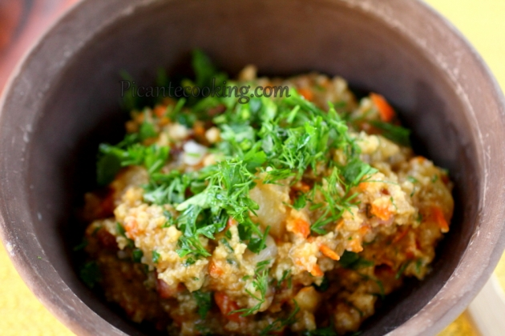

КОЗАЦЬКИЙ КУЛІШ

Інгредієнти:
- 200 грам пшона, добре промити гарячою водою
- 200 грам копченої грудинки, порізати кубиками
- 200 грам сала, порізати кубиками
- 1 велика цибуля (або 2 менші), порізати великими кубиками
- 1 середня морква, тонко порізати або натерти на терці з великими дірочками
- 4 середні картоплини, почистити, порізати кубиками
- 1,5 л води
- Сіль до смаку
- 1/2 пучка зелені петрушки, дрібно порізати
- 1/2 пучка зелені кропу, дрібно порізати
Приготування:
- На багатті, розмістити казанок поблизу вогню і додати копчене і сире сало.Смажити помішуючи, поки не витопиться достатньо жиру щоб додати цибулю.
- Додати цибулю, накрити кришкою і томити до м'якості цибулі.
- Додати моркву, перемішати і ще одну хвилину тушкувати все разом.
- Покласти у казанок промите пшоно, добре перемішати, щоб кожна зернина була огорнута ароматним смальцем.
- Одразу ж додати картоплю, перемішати й тушкувати 1 хвилину.Влити воду й посолити до смаку. Перемішати та накрити казанок кришкою. Варити усе, час від часу помішуючи, до м'якості картоплі, приблизно 12-15 хвилин.Куліш стане значно густішим.
- Приготувати затирку: у ступці розтерти сало з часником і сіллю. Можна це зробити в блендері, хоч це вже зовсім не по-козацьки. (Коли збираєтесь готувати куліш на природі, розітріть сало з часником завчасно, дома та складіть у переносний посуд, щоб взяти із собою)
- Додати затирку та зелень в готовий куліш і добре перемішати, накрити кришкою. Зняти казанок з вогню і залишити на 5 хвилин настоюватись.Подавати куліш з гарним настроєм і свіжою зеленню!:-)
- Смачного!